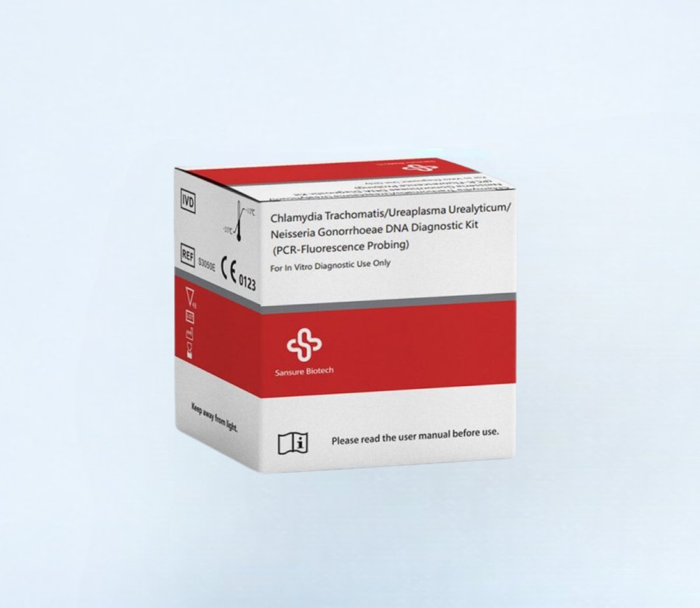
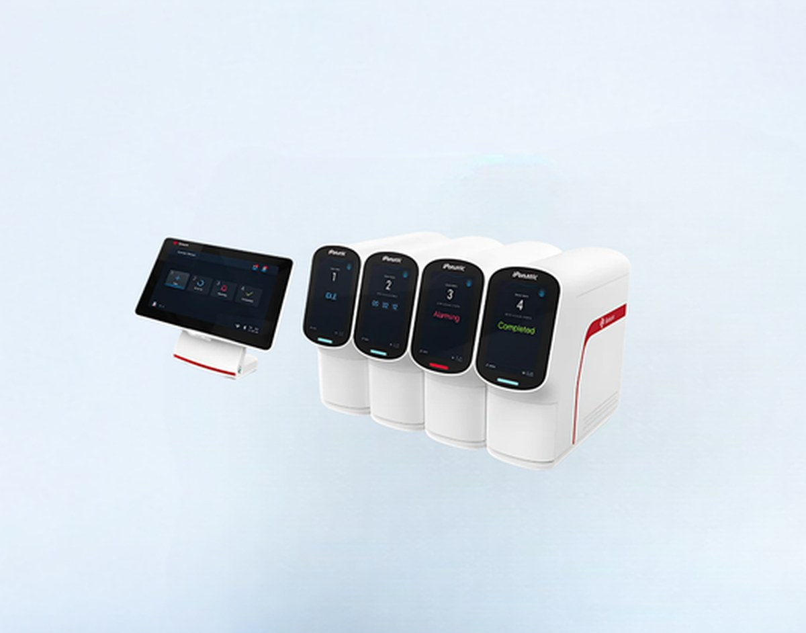

Biología Molecular
Kit CT/UU/NG (ITS)
Detección simultánea de Chlamydia trachomatis, Ureaplasma urealyticum y Neisseria gonorrhoeae.
Ver más
Estación de trabajo molecular portátil de Sansure Biotech: extracción de ácidos nucleicos, amplificación por PCR y análisis de resultados en un solo equipo de solo 7,2 kg, con resultados en 8 a 45 minutos según el ensayo utilizado.
Disponibilidad sujeta a stock. Despacho a laboratorios y centros de atención en todo Chile con soporte técnico incluido.
El iPonatic III (modelo S-Q36A) es un sistema de point of care molecular de Sansure Biotech diseñado para optimizar el diagnóstico de diversos patógenos respiratorios (SARS-CoV-2, Influenza A/B, VRS, adenovirus, rinovirus humano, M. pneumoniae, entre otros) así como infecciones de transmisión sexual y VPH, integrando en un solo equipo la extracción de ácidos nucleicos, la amplificación por PCR y el análisis de los datos ("sample-in, result-out").
Su interfaz táctil propia "SanUI", la conectividad inalámbrica y la posibilidad de combinar de forma flexible distintos kits de reacción lo convierten en una herramienta versátil para laboratorios médicos, salas de emergencia, áreas remotas, aeropuertos y aduanas, entregando resultados precisos en cortos períodos de tiempo.
Recomendado para el diagnóstico molecular en los siguientes entornos:
Menú de pruebas compatible incluye: infecciones respiratorias (SARS-CoV-2, SARS-CoV-2/Flu A/B, 6RP, TB, MP, AdV, BP, entre otras), infecciones por VPH (VPH 13+2, VPH 15 HR, VPH 16/18, VPH 6/11), infecciones de transmisión sexual (CT/UU/NG, CT, UU, NG, HSV-2), salud infantil (EBV, HCMV) y otras infecciones emergentes.
| Modelo | S-Q36A |
|---|---|
| Dimensiones | 391 × 140 × 368 mm (largo × ancho × alto) |
| Peso | Alrededor de 7,2 kg |
| Canales de detección | FAM, VIC/HEX, ROX/rojo Texas, CY5 |
| Tiempo de resultado | 8 – 45 minutos, según el kit de reactivos utilizado |
| Velocidad máx. de calentamiento | ≥ 10 °C/seg |
| Velocidad máx. de enfriamiento | ≥ 3 °C/seg |
| Precisión de temperatura | ±0,5 °C |
| Funciones | Extracción de ácidos nucleicos · Detección de amplificación · Análisis de datos |
| Pantalla | Táctil HD de 7" incorporada · pantalla inteligente de 12,1" (opcional) |
| Interfaces / comunicación | USB 2.0, RJ45, Tipo C, Wi-Fi, Bluetooth, LIS_LH7 |
| Alimentación | 100 – 240 VCA · 50/60 Hz · 160 VA |
| Temperatura de funcionamiento | 10 °C a 30 °C (transporte y almacenamiento: -40 °C a 55 °C) |
| Humedad | 30% – 80% en funcionamiento, sin condensación (transporte/almacenamiento ≤ 93%) |
| Presión barométrica | 85,0 – 106,0 kPa |
| Altitud de operación | Menos de 3.000 m |
| Certificación | CE · ISO 13485 |
| Fabricante | Sansure Biotech Inc. |